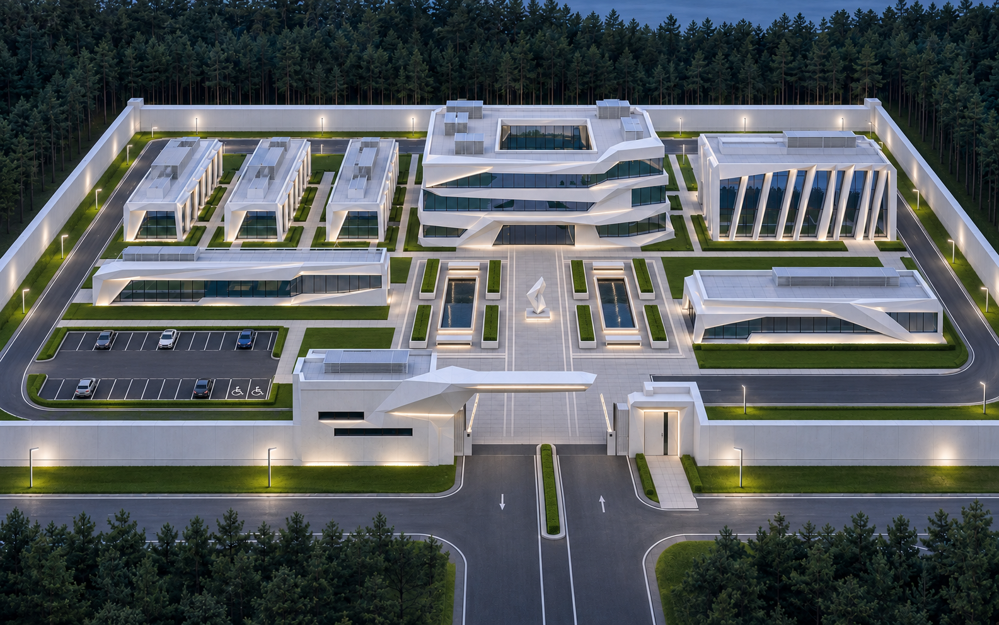

Alpha Site · Campus de investigación
Arquitectura modular · Concepto 02A
Alpha Site
Plano del campus
Campus de investigación de 240 × 150 m, con ocho edificios, 42 estacionamientos y acceso controlado al sur.

VISTA DEL CAMPUS · CONCEPTO 02AREFERENCIA ARQUITECTÓNICA · NO ES UN LEVANTAMIENTO
Edificios y muro blancoVialidad y parqueoLáminas de aguaSeto uniformeRecorridos peatonales
PLANO V09 · NORTE ARRIBAPLAZA · PARQUEO · MURO BLANCO · ACCESOS
8edificios
42plazas de estacionamiento
2carriles de acceso
1plaza cívica central
240 × 150 msitio conceptual
Componentes del campus
A01 · Administración e I+D49 × 37 m · 3 niveles
L01–L03 · Laboratorios18 × 39 m cada uno
L04 · Laboratorio de apoyo65 × 12 m
H01 · Pabellón científico33 × 50 m · 2 niveles
P01 · Prototipado45 × 21 m
S01 · Estación de seguridad16 × 15 m · integrada en la entrada
Seguridad y paisaje
Perímetro: muro blanco y franja interior despejada.
Entrada: dos carriles y portal peatonal junto a S01.
Circulación: anillo vial, parqueo con pasillo central y rutas peatonales.
Plaza: agua, bancos y jardineras fuera del paso.
Edificios: fachadas blancas, lamas y ventanales con privacidad.
Entrada: dos carriles y portal peatonal junto a S01.
Circulación: anillo vial, parqueo con pasillo central y rutas peatonales.
Plaza: agua, bancos y jardineras fuera del paso.
Edificios: fachadas blancas, lamas y ventanales con privacidad.
Plan de seguridad inicial
24cámaras
3guardias por turno + relevos
4sectores de alarma en el muro
0torres en la primera etapa
1. Cámaras y alarmas
12 en el perímetro · 3 en la entrada · 2 en parqueo · 7 en edificios. Toca una cámara para ver su función.
Desliza el plano para ver todos los puntos.
C01–C12 · perímetroC13–C15 · entradaC16–C24 · parqueo y edificiosAlarma del muro
Ubicaciones preliminares. Los conos muestran dirección, no cobertura garantizada. Ajustar altura y lente con pruebas de día y noche.
2. Guardias y patrullaje
Tres robots K9 y dos drones patrullan desde S01, según el gemelo 3D. Personas en S01 autorizan accesos y respuesta; los agentes solo observan y reportan.
Desliza el plano para ver todo el recorrido.
K9-1 · anillo ≈ 598 mK9-2 · franja del muro ≈ 779 mK9-3 · red peatonal S01 ↔ L04D-1 · vuelo perimetral ≈ 700 mD-2 · inspección de A01, H01, P01, L01–L03, PK01Q1–Q4 · puntos de revisiónE? · posible salida de emergencia, por validar
1 · Operador en S01Cámaras, alarmas y radio.
1 · Guardia en la entradaPersonas, vehículos y visitas.
1 · Guardia de respuestaVerifica en sitio las alertas de K9 y drones.
Cobertura 24/7 con personal de relevo. El ingreso y la consola permanecen atendidos; los K9 cargan en S01 y D-2 alterna misiones y carga en la cubierta.
3. Qué instalar
| Área | Plan inicial |
|---|---|
| Perímetro | Muro continuo, franja despejada, iluminación y alarmas en 4 sectores. |
| Accesos | Credenciales, intercomunicador, registro de visitas y sensores en puertas exteriores. |
| Centro S01 | Grabador de 32 canales, consola, radios, red dedicada y batería de respaldo. |
| Torres | No inicialmente. Usar postes y fachadas; reconsiderar si quedan puntos ciegos comprobados. |
| Emergencias | Validar una salida independiente y probar evacuación, cortes de energía y comunicaciones. |
4. Orden de trabajo
- Validar y cotizarMedir el terreno y probar vistas de cámaras.
- Instalar y operarEquipos, guardias y pruebas de funcionamiento.
- Agregar IAFiltrar alertas y preparar bitácoras; personas autorizan accesos y respuesta.